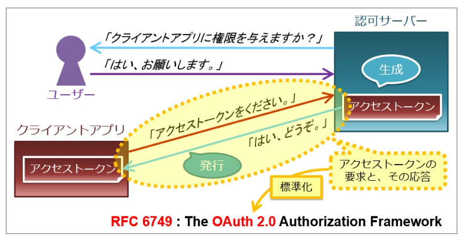
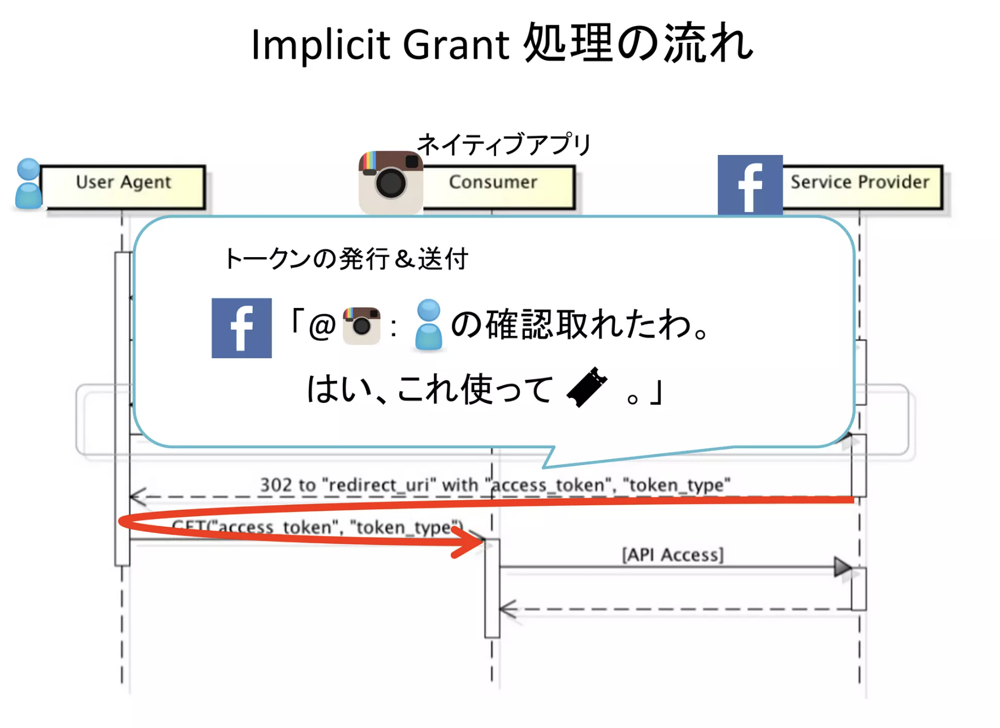

2. テーマの整理¶
2.1. マイクロサービアーキテクチャとは¶
マイクロサービスの概念は10年前の2014年くらいから提唱されている
2.2. マイクロサービスアーキテクチャのメリット¶
マイクロサービス一番の目的はサービス間の独立性
疎結合となることで、機能間のソフトウェア的な組織的な独立性を高めて、開発速度向上を高める。 「開発速度を高めることができる」を深掘りするとコンテナサービスやCICDの文脈が語れると思う。
2.3. 基本的な動き¶
認証認可のサーバーからTOKENを受け取って、 バックエンド機能に問い合わせをしていくのが基本の動き。 認可の情報に従って、提供するサービスを制御してバックエンドは処理を返していく
2.4. Oath2.0やOpenIDConnect勉強¶
2.4.1. Oath2.0¶
HTTP上で、認可を行うための仕様
正確にに書くと
OAuth 2.0 とは、サービスのユーザーが、サービス上にホストされている自分のデータへのアクセスを、自分のクレデンシャルズ (ID & パスワード) を渡すことなく、第三者のアプリケーションに許可するためのフレームワークである。
具体例で書くと
あるサイトAの機能（FaceBookの写真投稿）を、サイトB（Instagram）から実行するために、 ユーザーがサイトBに許可を与えて、サイトAにアクセスすることを認めること。
ユーザーがサイトBでサイトAについて認可すると、サイトBの認可チケットをサイトAへわたす。 そうすると、サイトAにサイトBの認証情報をおかないで、サイトAへ認可することができる。

Oathが流行っている理由
パスワードをサードパーティのアプリに渡すことなくAPIを利用できる
どのリソースにアクセス可能かを細かくユーザーに認可させることができる
2.4.1.1. トークンの発行フロー¶
Authorization Code GrantとImplicit Grantの２つがある。
2.4.1.1.1. Authorization Code Grant¶
Authrozation CodeはサイトAのTokenをユーザーには渡さない 代わりに、認可コードをWebアプリケーションに渡す。

2.4.1.1.2. Implicit Grant¶
一番の違いはImplicit GrandはサイトAのTokenを一度ユーザーに渡す点

2.4.2. Oath認証¶
Oathを使って、認証までしてしまおうという流れ。 本来Oathは認証ではなくて認可の使用なので、間違って使うと脆弱性が生まれる。
認可は「誰が、誰に、何を」提供するかを定義するものであり、 その中の「誰が」は認証をしているものなので、話がややこしい。 このOathの認可の中で認証をしているので、これを認証として扱ってしまおうというのが「Oath認証」

本来認証ではない行為を使って認証をしている。マンションの合鍵を持ってきて、本人確認をする。 OAuth Server（Twitter）とかで悪さすることができるので、合鍵をばら撒くのは好ましくない・・・

セキュリティ的なレベルの低さはあったが、手軽さのおかげで普及した
2.4.2.1. セキュリティホール¶
セキュリティホールは、 access_tokenをUserAgentに渡すということは、UAはaccess_tokenを使いまわせる点にある。 サイトAが悪役で、渡したTokenが盗まれたとすると、そのTokenを使うことで、認証せずに、サイトBがAのふりをできる。

2.4.3. OpenID¶
異なるWebサービス間でユーザーの認証情報を受け渡す方法
認証：紹介状を使って本人確認をしているイメージ 紹介状はIdentity Provider（Googleとか）に書いてもらう
登場人物は３人
EndUser
OpenID Provider(ユーザー認証を行う)
Relying Party（ユーザーの許可のもと、OPから認証情報をもらう）
2.4.4. OpenID Connect¶
認証の仕様
上記のOathの課題観を解決するためにOpenID Connctを開発。 OathとOpenIDを組み合わせて、認証を提供する 基本アイデアはOathで渡す鍵を紹介状が入っているロッカーの鍵にすること このロッカーを「UserInfo （ユーザ情報）Endpoint」と呼ぶ 紹介状の中には、どのような認証をしたのかというメタ情報もある。この紹介状のことを、OpenIDトークンと呼ぶ